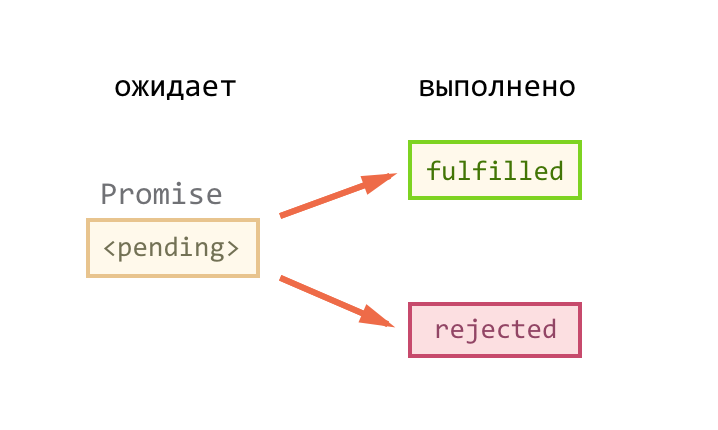

Callback-функция или функция обратного вызова - передача исполняемого кода в качестве одного из параметров другого кода.
app.all('/secret', function (req, res, next) {
console.log('Accessing the secret section ...');
next(); // pass control to the next handler
});
fs.readdir(source, function (err, files) {
if (err) {
console.log('Error finding files: ' + err)
} else {
files.forEach(function (filename, fileIndex) {
console.log(filename)
gm(source + filename).size(function (err, values) {
if (err) {
console.log('Error identifying file size: ' + err)
} else {
console.log(filename + ' : ' + values)
aspect = (values.width / values.height)
widths.forEach(function (width, widthIndex) {
height = Math.round(width / aspect)
console.log('resizing ' + filename + 'to ' + height + 'x' + height)
this.resize(width, height).write(dest + 'w' + filename, function (err) {
if (err) console.log('Error writing file: ' + err)
})
}.bind(this))
}
})
})
}
})
fs.readdir(readFilesFunc(readSingleFileFunc(gm(eachSizeFunc(fixWidthFunc)))));
Promise – это специальный объект, который содержит своё состояние. Вначале pending («ожидание»), затем – одно из: fulfilled («выполнено успешно») или rejected («выполнено с ошибкой»).

var promise = new Promise(function(resolve, reject) {
setTimeout(function () {
if(Math.rand() > 0.5) {
return resolve([1, 2, 3, 4, 5]);
}
reject(new Error("Bang!")); // throw new Error("Bang!");
}, 10 * 1000);
});
promise.then(
result => {
// первая функция-обработчик - запустится при вызове resolve
alert("Fulfilled: " + result); // result - аргумент resolve
},
error => {
// вторая функция - запустится при вызове reject
alert("Rejected: " + error); // error - аргумент reject
}
);
function handleRequestPromises(req, res) {
var user = req.user
isUserValidAsync(user).then(function () {
return Promise.all([
getUserDataAsync(user),
getRateAsync('service')
])
}).then(function (results) {
const newData = updateData(results[0], results[1])
return updateUserDataAsync(user, newData)
}).then(function (data) {
res.send(data)
}).catch(function () {
res.error('An error ocurred!')
})
}
async function asyncHandleRequest(req, res) {
try {
const { user } = req
await isUserValidAsync(user)
const [data, rate] = await Promise.all([getUserDataAsync(user), getRateAsync('service')])
const savedData = await updateUserDataAsync(user, updateData(data, rate))
res.send(savedData)
} catch (err) {
res.error('An error ocurred!')
}
}
Кукареко Александр, iKantam
Дополнительная инфомрация:
Презентация: https://lightsuner.github.io/presentation/async_await_ik_2017